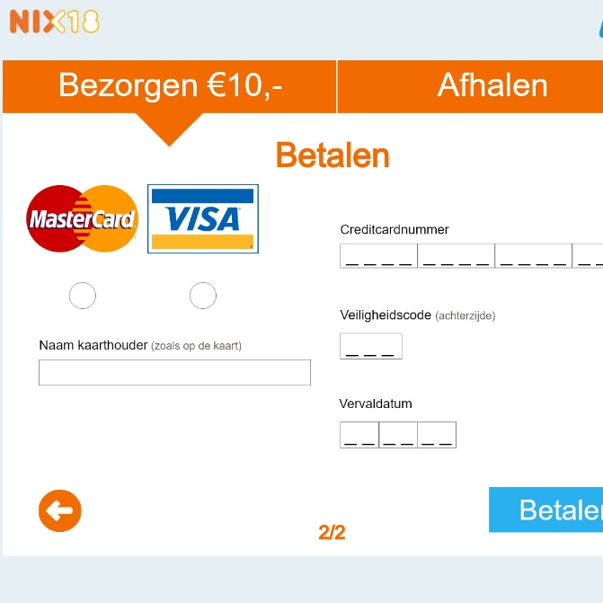

Werk
HCI
Voor HCI kregen we een ontwerp opdracht. De opdracht was simpel: ontwerp een goed design die duidelijk voor de gebruiker te lezen is. Hierbij staat de duidelijkheid voor de gebruiker centraal. We moesten vooral op het interface letten en hoe je bepaalde data aan de gebruiker presenteerd. Het project ging over een WK-bieractie bij de Albert Heijn, waarbij je de gebruiker goed moest ondersteunen met het proces. Dit houd in precies weten hoe je gebruiker het proces door moet lopen, welke obstakels hij of zij tegen kan komen en welke informatie de gebruiker nodig heeft (en wanneer).
Ontwerpgeschiedenis
Voor ontwerpgeschiedenis kregen wij elke week een hoorcollege dat over ontwerp en design in de geschiedenis ging. Hierbij moesten we tijdens de hoorcolleges sketchnotes maken. Het was de bedoeling dat je uiteindelijk een boekje zou overhouden, die je presenteerd aan je docent. Ook moest je het Stedelijk Museum bezoeken, en 4 kunstwerken onderzoeken. Dit schreef je ook allemaal op in je boekje. De tijden uit de geschiedenis waren: 1918-1960, 1960-1989, 1989-2001 en 2001-2018. Tijdens het assesment moest je ook je eigen kijk op design uitleggen, en hoe je wat je geleerd hebt toe gaat passen op je toekomstige design.

Team Project 1
Voor Team Project 1 kregen we onze eerste opdracht die je moest maken binnen een team. Eerst kregen we interviews over sporters die we moesten analyseren, en waar we problemen uit moesten halen. Vervolgens kreeg je een sporter waar je een app voor moest maken, die het probleem op zou moeten lossen. Dit deed je binnen het team, en feedback was een berlangrijk aspect. Bijna elke week moesten we testpersonen zoeken om onze app mee te testen en te verbeteren. Aan het eind van het blok moesten we onze app presenteren aan andere klassen./p>
UCD
Voor UCD moesten we een presentatie geven over de Maas koffieautomaten bij ons op school. De bedoeling was dat je ging observeren, om te kijken welke problemen er waren tijdens het zetten van koffie. We moesten een groot verslag maken, met affinity map, scenario's, concepten, ideaal scenario en storyboards. Hierbij ging het volledig op wat de gebruiker wilde en nodig had. Hierbij maakte je een poster en aan de hand van die poster kon je gaan presenteren.